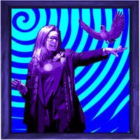

Alfred Jarry’s Semantics
Posted on 01.10.2017
Tags: art, pataphysics, reading, phd

Stillman
“a web of disambiguation, mirrors, energy, machines, and potential collisions”
Posted on 01.10.2017
Tags: art, pataphysics, reading, phd
Stillman
“a web of disambiguation, mirrors, energy, machines, and potential collisions”